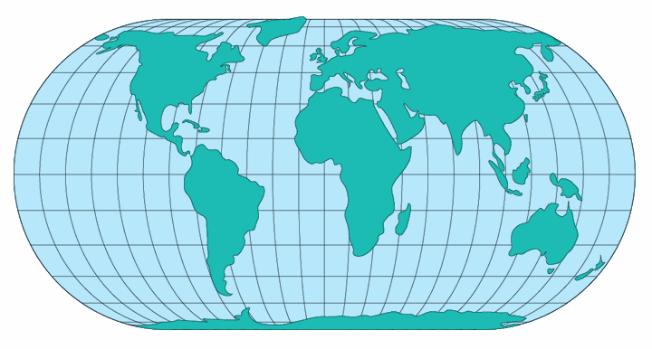

Eckert IV
Usage

Usage:*
In 1906 Max Eckert
(1868-1938)of Keil, Germany, presented a set of six new global
projections in which all poles are lines half as long as the Equator.
Numbers 4 and 6 are of the most significant.
No's 2,4, and 6 are equal-area projections,
and no's 1,3, and 5 are not equal-area, but have equally spaced
parrallels. The Eckert 4 or (more commonly reffered with the Roman
numeral IV) projection is commonly used in the US. It ranked third as an
equal-area world map projection in U.S. textbooks between 1940 and 1960.
The meridians on no.'s 3
and 4 are elliptical arcs, with the exception of the straight central
meriadians,and semicircular outer meridians. Parrallels are unequally
spaced straight lines parrallel to each other. Poles are straight lines
half the length of the equator. Additionally, the scale is true along
the 30 ° 40' N and S.
* Usage information source:
Snyder, John P. Map Projections - A Working Manual Paper U.S. Geological
Survey Professional Paper 1395. Washington: United States Government
Printing Office, 1987.